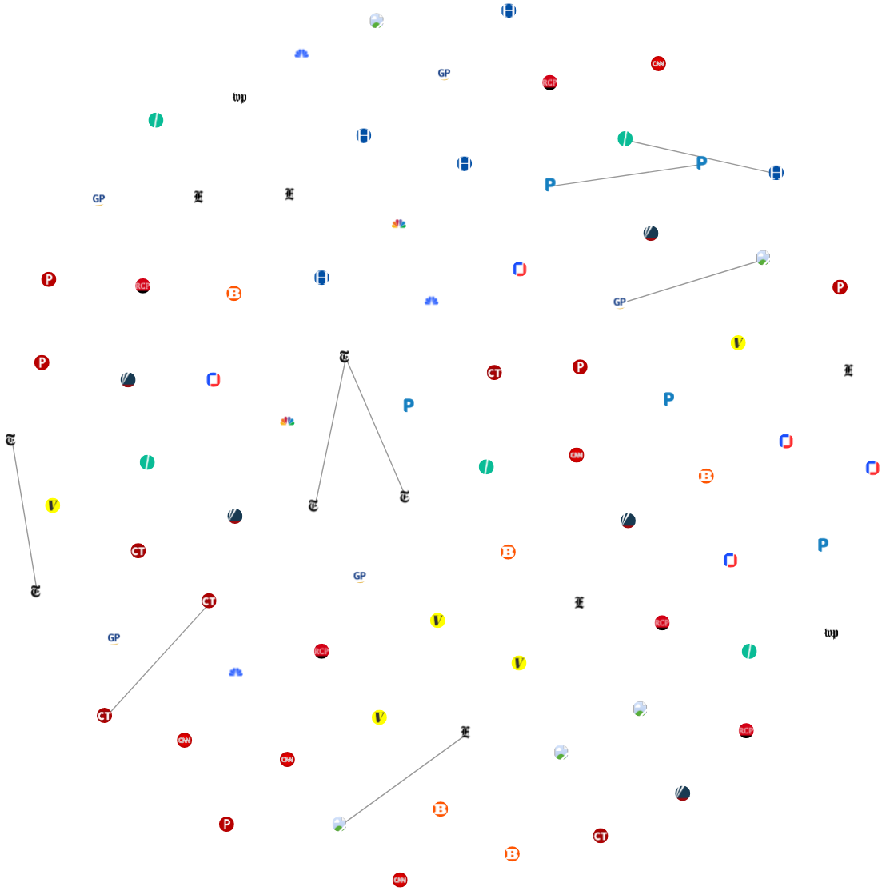
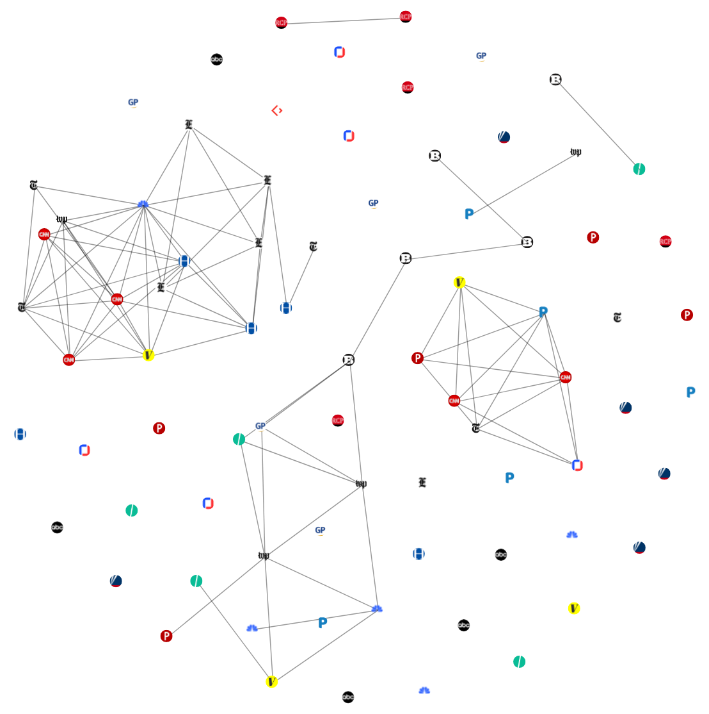
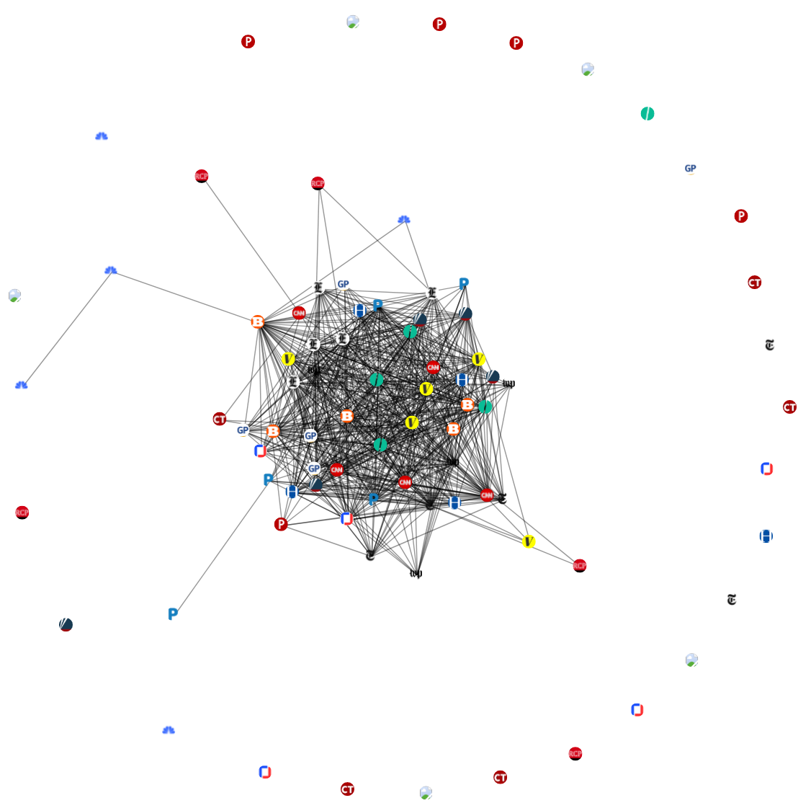

StoryGraph provides a collection tools that analyze the news cycle by computing the similarity of news stories across 17 US news sources
|

|

|

|
Three news similarity graphs illustrating the dynamics of the news cycle. In these graphs, a single node represents a news article, a connected component (multiple connected nodes) represents a single news story reported by the connected nodes. StoryGraph uses the average degree (attention score) of the connected components to quantify the level of attention the topics in the news stories receive. The first graph shows what is often referred to as a slow news day; low overlap across different news media organizations. The second graph shows a scenario where the attention of the media is split across multiple news stories. The third graph for the "AG William Barr's release of his principal conclusions of the Mueller Report" story shows a major news event; high degree of overlap/connectivity across different news media organizations.
Polar Media Consensus Graph generates a news similarity graph every 10 minutes by computing the similarity of news stories from 17 US news sources across the partisanship spectrum (left, center, and right). In these graphs, the nodes represent news articles, and an edge between a pair of nodes represents
a high degree of similarity between the nodes (similar news stories). The graphs track the development of a news events.
Blog posts: